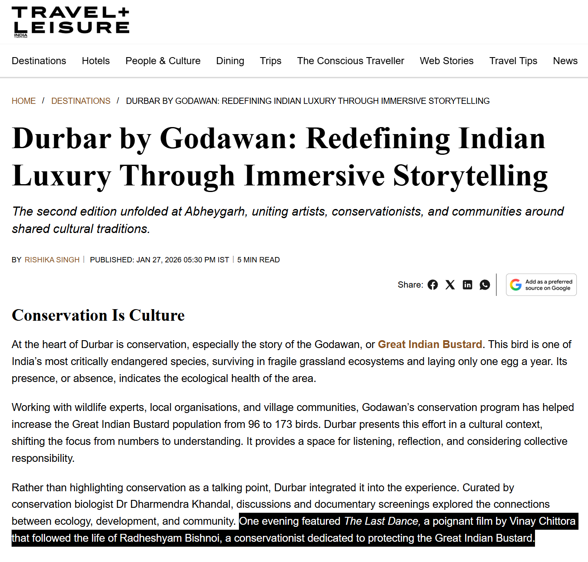

Durbar by Godawan Estuary Water: Second Edition in Khetri, Rajasthan
A BrandHub press feature on Godawan Durbar’s Khetri edition—bringing together craft, culture and conservation in Rajasthan.
Cane & Camera is a wildlife and nature storytelling initiative based in Rajasthan, India, blending documentary filmmaking, conservation narratives, and fine-art photography. From the dense forests of Mukundara Hills Tiger Reserve to the grasslands of the Thar Desert, our work captures the untold stories of India’s wild landscapes; their biodiversity, their people, and the fragile balance between both.
Every frame is created with patience, respect, and deep local understanding; documenting real encounters, not orchestrated scenes. Through these images and short films, we aim to inspire awareness, empathy, and meaningful conversation around conservation.
Selected works are available as limited-edition fine art prints and licensed digital downloads. For collaborations, exhibitions, or print inquiries, please reach out at hello@caneandcamera.com
Selected features, interviews, and mentions.
A BrandHub press feature on Godawan Durbar’s Khetri edition—bringing together craft, culture and conservation in Rajasthan.

Coverage of Godawan Durbar at Abheygarh, Khetri—an intimate, conservation-led gathering in Rajasthan’s Aravallis, spotlighting Great Indian Bustard protection, culture, craft and mindful luxury.

TravelMedia’s recap of Godawan Durbar at Abheygarh (Khetri)—where heritage, music and craft meet conservation, including conversations around the Great Indian Bustard and community-led protection efforts.

Free Press Journal frames Godawan Durbar as a conservation-rooted cultural immersion—featuring ecology-led discussions and documentary screenings, including The Last Dance (directed by Vinay Chittora) spotlighting Great Indian Bustard protection.

Travel + Leisure Asia explores Abheygarh in Khetri as the setting for an intimate, place-rooted experience—bringing together culture, craft and conservation in Rajasthan’s Aravalli landscape.

The official PRNewswire release on Godawan Durbar at Abheygarh, Khetri—an experiential gathering in Rajasthan’s Aravallis blending culture, craft and conservation, with programming that highlights Great Indian Bustard awareness and community-led protection.